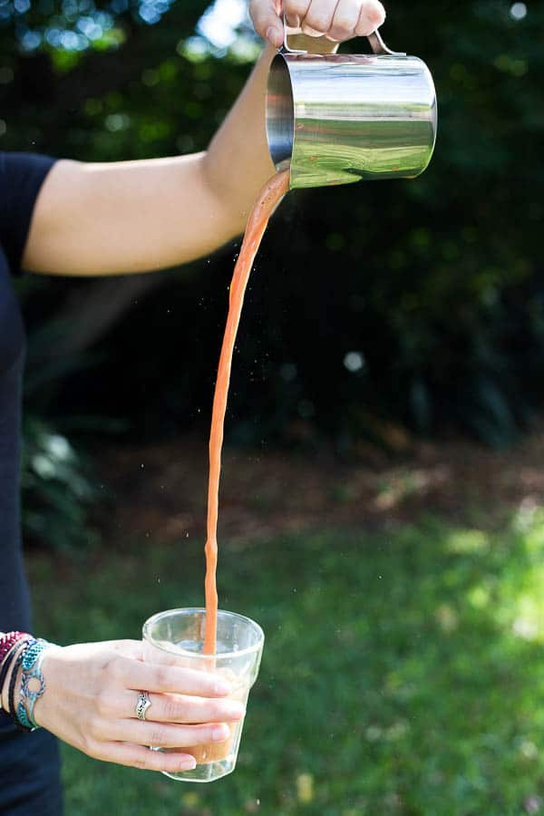

Teh Tarik
Description
Frothy tea with condensed milk enjoyed by many at the mamak or even the comfort of their home
Ingredients
Directions
- Place teabags or loose tea in a strainer in a mug and pour over boiling water. Steep for a few minutes until tea is dark and intense, then allow to cool for a few more minutes. Strain through a cloth if necessary.
Add 2 tbsp condensed milk and stir until spoon is clean.
- Pour the tea into a stainless steel jug, then pour into a mug or tea glass. Try to gain as much height as possible while pouring. Repeat until tea is frothy.
- Serve hot or over plenty of ice for a chilled summer drink.